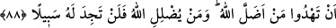
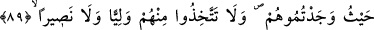
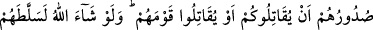
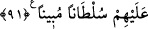

MÜNÂFIKLAR, KÂFİRLER
88- Size ne oldu da münâfıklar hakkında iki gruba ayrıldınız? Halbuki Allah
onları kendi ettikleri yüzünden baş aşağı etmiştir. Allah’ın saptırdığını doğru yola
getirmek mi istiyorsunuz? Allah’ın saptırdığı kimse için aslâ (doğruya) yol
bulamazsın!
89- Sizin de kendileri gibi inkâr etmenizi istediler ki onlarla eşit olasınız. O halde
Allah yolunda göç edinceye kadar onlardan dostlar edinmeyin. Eğer yüz
çevirirlerse onları yakalayın, bulduğunuz yerde öldürün ve onlardan dost ve
yardımcı edinmeyin.
90- Ancak kendileriyle aranızda antlaşma bulunan bir topluma sığınanlar yâhut ne
sizinle ne de kendi toplumlarıyla savaşmak (istemediklerin) den yürekleri sıkılarak
size gelenler müstesna, Allah dileseydi onları başınıza belâ ederdi de sizinle
savaşırlardı. Artık onlar sizi bırakıp bir tarafa çekilir de sizinle savaşmazlar ve size
barış teklif ederlerse bu durumda Allah size, onların aleyhinde bir yola girme hakkı
vermemiştir.
91- Hem sizden hem de kendi toplumlarından emin olmak isteyen başkalarını da
bulacaksınız. Bunlar her ne zaman fitneye götürülseler ona baş aşağı dolarlar